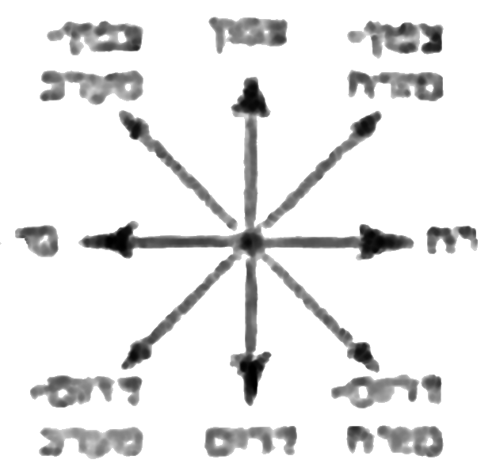

⚠ עמוד 44 (שאלות 4–6) מטושטש מאוד בסרטון. מה שאפשר היה לקרוא:
(טקסט מטושטש) במפעל לייצור … עובדים 4 … בעלי אותו הספק … בעל המפעל שכר את שירותיהם של 2 … נוספים שהספקם כפול מהספקם של … הקיימים במפעל. כמה זמן ידרוש כעת (בשעות) לצוות החדש לייצר … ?
(4 תשובות מספריות – לא קריאות)
נתון: a < 0 , (b^?/a) < (|b|^?/a)⚠
מה מהבאים נכון בהכרח?
כמה מעגלים שונים קיימים ש… (המשך השאלה לא קריא)
נתון: a ו־b הם מספרים טבעיים. a = b + 1 , a² − b² = 23
a × b = ?

משה יצא מביתו בשעה 9:00 וצעד במהירות של 5 קמ"ש במשך שעה לכיוון מערב עד לנקודה A. לאחר מכן פנה לכיוון דרום וצעד במשך שעה נוספת באותה המהירות עד לנקודה B. בתום שעה זו צעד משה שוב מערבה במשך שעה, באותה המהירות, עד לנקודה C.
אם משה יצעד כעת, באותה המהירות, בקו ישר בחזרה לביתו, כמה זמן (בשעות) תארך דרכו חזרה?
ליעד ושי בחרו שני מספרים שונים בעלי 6 ספרות הזהות זו לזו. מה מהבאים נכון בהכרח?
נתון: x ו־y מספרים עוקבים. z = x² + y²
מה מהבאים נכון בהכרח?